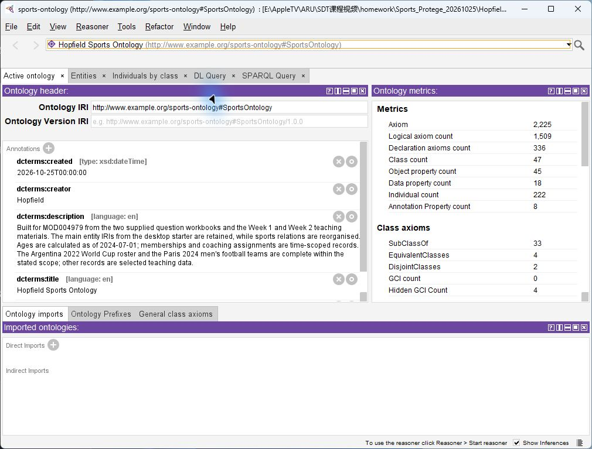
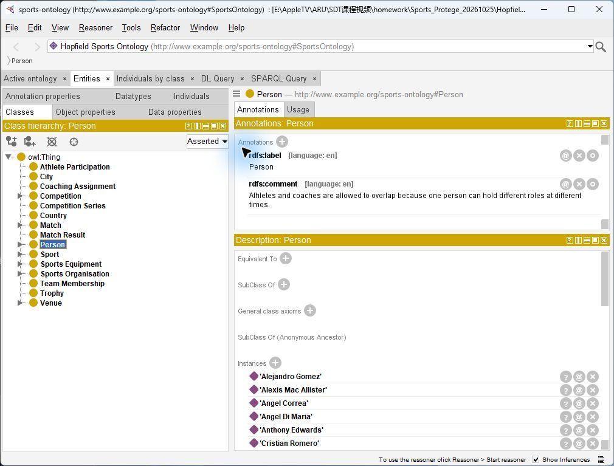
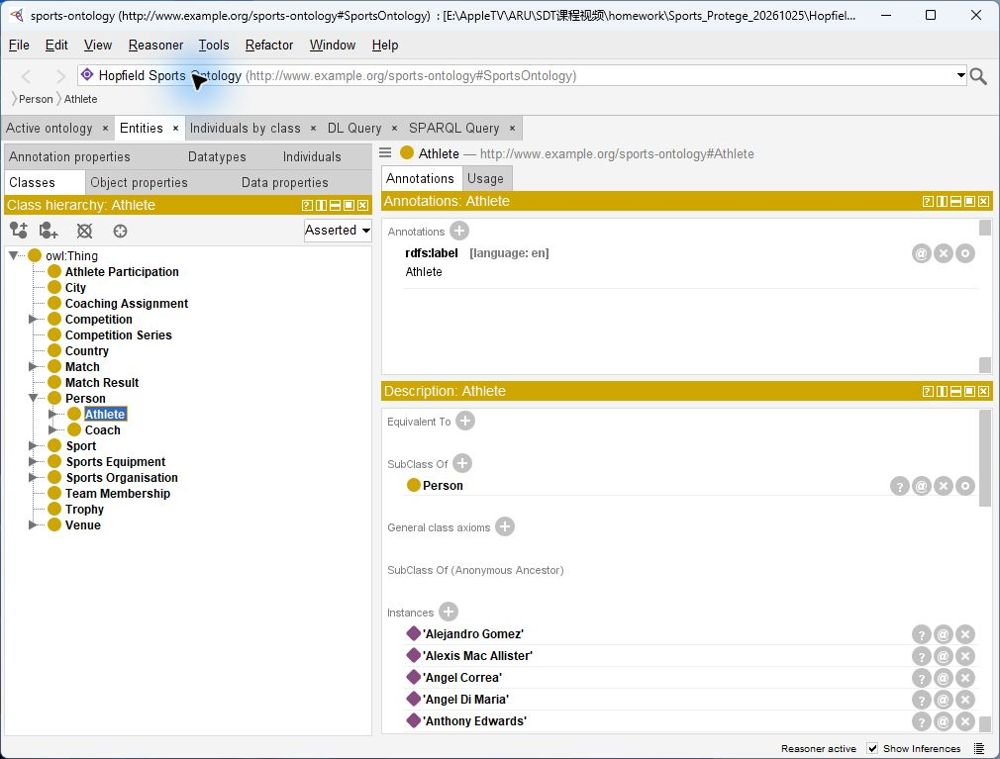
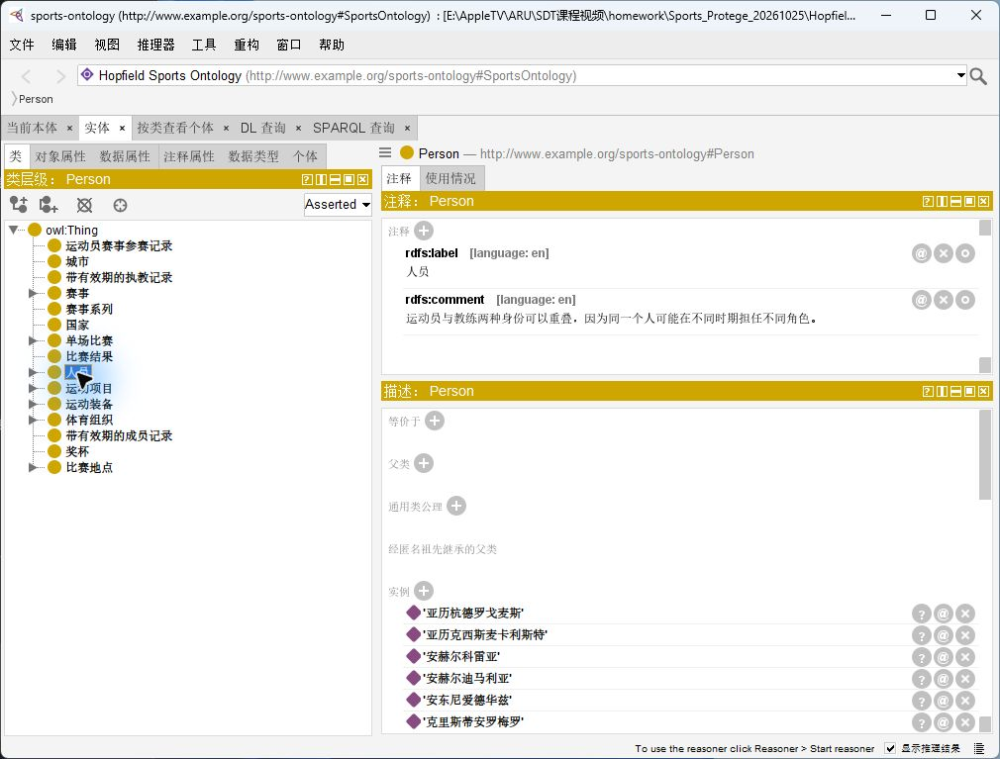
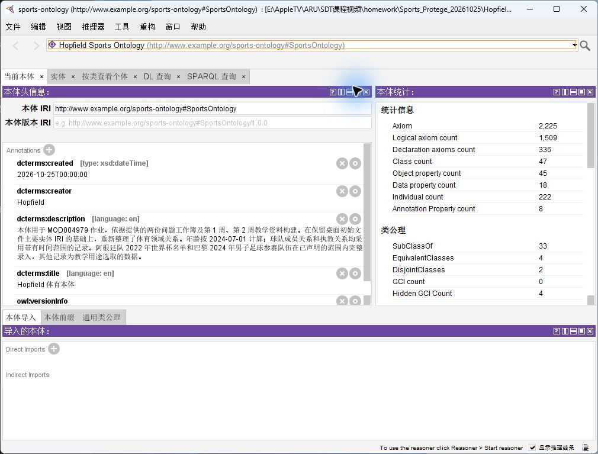
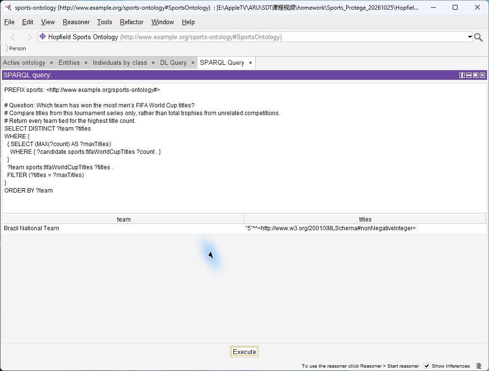

1 · 打开
在 Protégé 中用 File → Open… 打开英文 OWL。HTML 指南用浏览器打开。
Hopfield_Sports_Ontology.owl这是英文作业配套的双语学习与演示材料；答辩时使用英文说明，中文帮助个人理解。
把这份指南放在 Protégé 旁边使用。先看懂模型，再跟着步骤操作，最后练习五个查询，掌握“为什么这么建、为什么结果是这样”。
在 Protégé 中用 File → Open… 打开英文 OWL。HTML 指南用浏览器打开。
Hopfield_Sports_Ontology.owl选择 Reasoner → HermiT → Start reasoner，查看类层次，并区分显式写入的事实和推理得到的事实。
把一份完整 .rq 查询粘贴到 SPARQL Query，点击 Execute，再与附带 CSV 结果对照。
| 文件 / 文件夹 | 用途 |
|---|---|
| Hopfield_Sports_Ontology.owl | 给 Protégé 打开的英文作业本体 |
queries/ | Q01–Q22 和 QA01–QA15，共 37 份完整 SPARQL |
results/ | 由当前 OWL 实际运行得到的 CSV 与 query_results.json |
validation/ | HermiT、一致性、推理检查和三个独立负例 |
doc/screenshots/ | 实际 Protégé 截图；点击图片可放大 |
类表示一类事物；个体表示一个具体对象；属性连接实体，或保存数字、日期等字面值。下图只展示当前本体的部分关键结构。
Athlete → LionelMessiNationalTeam → ArgentinaNationalTeamFootballSport → FootballFootballSport 是类，Football 是个体，可作为 playsSport 的对象。两者 IRI 不同。LionelMessi → memberOf → ArgentinaNationalTeamLionelMessi → athleteAge → 37直接的 memberOf 关系不能表达“哪段时间、哪届赛事”。TeamMembership 把球员、队伍、赛事和有效日期放进同一条记录。
memberOf / hasAthlete 是历史成员快捷关系，不能直接表示当前名单或同时期队友。QA14 因此连接两条有效期重叠的成员记录。CoachingAssignment 同样记录教练、队伍和时间；AthleteParticipation 记录运动员在某赛事代表的队伍；CompetitionSeries 表示赛事系列，CompetitionEdition 表示其中一届。
Protege.exe，用 File → Open… 选择 Hopfield_Sports_Ontology.owl。确认顶部当前本体为 Hopfield Sports Ontology。owl:Thing；作业的命名领域类是 46 个。PREFIX 在内的全部内容；点击查询编辑区，全选并粘贴，再按 Execute。也可用本指南的复制按钮。.rq 是查询文本，不要当成本体用 File → Open 打开。results/ 对照，再解释它们来自哪些关系。依次运行五个示例。修改查询只改变提问，不会改写本体。


提交版 OWL 的标签、注释和数据均为英文。中文由本机插件提供显示辅助。你可以用中文学习，给老师演示前再切回英文。
| 操作 | 预期效果 |
|---|---|
| Help → 简体中文界面 取消勾选 | 菜单及本体实体显示英文，适合给老师演示。 |
| Help → 简体中文界面 勾选 | 常用界面及支持视图中命中词典的体育实体显示中文。 |
| 再次取消 | 恢复英文。插件记住上次选择；首次安装默认不启用中文。 |

插件按完整 IRI 映射 331 个体育实体及 24 条注释或可读正文。现有标签、注释、作业描述及只读公理中可识别的实体名称随开关切换。查询文本、结果变量列名、数字、日期、IRI 和 OWL 语法保持原样；词典尚未收录的文本可能仍为英文。仓库已附带可选中文插件，安装和使用方法见中文插件说明。安装时先关闭 Protégé，将 chinese-ui-1.0.1.jar 复制到自己 Protégé 安装目录的 plugins/ 中，再重启 Protégé。安装插件后才会出现语言开关；英文作业本体本身不依赖中文插件。

每个演示都按“提问 → 指出实体与关系 → 运行 → 读结果 → 解释建模原因”练习。下方结果表来自已经实际执行的记录，不是在 HTML 内实时查询。
为什么这样查询：DISTINCT让每名运动员只计数一次；赛事限定将2022年国家队名单与俱乐部和其他时期的成员记录分开。
PREFIX sports: <http://www.example.org/sports-ontology#>
# Question: How many athletes are in Argentina's 2022 FIFA World Cup squad?
# Count competition-specific membership records, rather than mixing club and national-team memberships from different periods.
SELECT (COUNT(DISTINCT ?athlete) AS ?athleteCount)
WHERE {
?membership a sports:TeamMembership ;
sports:membershipTeam sports:ArgentinaNationalTeam ;
sports:membershipCompetition sports:FIFAWorldCup2022 ;
sports:memberAthlete ?athlete .
}
结果为1行，athleteCount=26。
| athleteCount |
|---|
26 |
queries/Q02.rq · results/Q02.csv
hasAthlete是历史成员快捷关系；按赛事筛选TeamMembership能明确统计哪份名单。
不是。赛事名单与playedInMatch不同；本数据只录入精选实际出场记录。
阿根廷最终名单在该范围内完整录入；其他世界杯队伍仅录入精选记录。
为什么这样查询：单一分数字面量无法区分队伍，也无法区分比赛进球和点球大战；分开字段可保留语义，并便于数值筛选。
PREFIX sports: <http://www.example.org/sports-ontology#>
# Question: What were the scores of both teams in the 2022 FIFA World Cup final?
# Home and away scores include extra time. Penalty-shootout scores are displayed separately and are not added to match goals.
SELECT ?match ?homeTeam ?homeScore ?awayTeam ?awayScore ?penaltyHomeScore ?penaltyAwayScore
WHERE {
sports:FIFAWorldCup2022 sports:finalMatch ?match .
?match sports:homeTeam ?homeTeam ;
sports:awayTeam ?awayTeam ;
sports:homeScore ?homeScore ;
sports:awayScore ?awayScore .
OPTIONAL { ?match sports:penaltyHomeScore ?penaltyHomeScore . }
OPTIONAL { ?match sports:penaltyAwayScore ?penaltyAwayScore . }
}
阿根廷与法国加时后3:3；阿根廷点球大战4:2获胜，查询返回1行比赛记录。
| match | homeTeam | homeScore | awayTeam | awayScore | penaltyHomeScore | penaltyAwayScore |
|---|---|---|---|---|---|---|
WorldCupFinal2022 | ArgentinaNationalTeam | 3 | FranceNationalTeam | 3 | 4 | 2 |
queries/Q06.rq · results/Q06.csv
并非每场比赛都有点球大战；若强制要求点球字段，会错误过滤没有点球记录的比赛。
不能。点球大战不加到3:3的比赛比分里，二者代表不同阶段。
homeTeam和awayTeam是赛程中的名义主客队，不表示中立场决赛存在主场优势。
为什么这样查询：阈值针对获胜队，而不是固定主队；点球大战不参与进球计数。成员测试保证hasWinner确实是该场双方之一。
PREFIX sports: <http://www.example.org/sports-ontology#>
# Question: Which football competitions include a match in which the winning team scored more than three goals?
# Use the winning team's home or away score. Penalty-shootout goals are excluded.
SELECT DISTINCT ?competition ?match ?winner ?goals
WHERE {
?competition sports:competitionSport sports:Football .
?match sports:inCompetition ?competition ;
sports:hasWinner ?winner ;
sports:homeTeam ?homeTeam ;
sports:awayTeam ?awayTeam ;
sports:homeScore ?homeScore ;
sports:awayScore ?awayScore .
FILTER (?winner IN (?homeTeam, ?awayTeam))
BIND (IF(?winner = ?homeTeam, ?homeScore, ?awayScore) AS ?goals)
FILTER (?goals > 3)
}
ORDER BY ?competition ?match
当前记录中1场满足条件：FIFAWorldCup2022的英格兰6:2伊朗，获胜队进6球。
| competition | match | winner | goals |
|---|---|---|---|
FIFAWorldCup2022 | EnglandIran2022 | EnglandNationalTeam | 6 |
queries/Q16.rq · results/Q16.csv
获胜队可能是客队；BIND IF让阈值始终对应胜者。
不满足。比赛比分是3:3，点球大战另存，不计入这里的goals。
结果只涵盖本体中已录入的精选比赛，不是完整历史赛事检索。
为什么这样查询：年龄和成员关系都随时间变化；统一统计日可避免把历史队伍与当前年龄拼接。OPTIONAL和BOUND允许记录未填写止日的开放区间。
PREFIX sports: <http://www.example.org/sports-ontology#>
PREFIX rdfs: <http://www.w3.org/2000/01/rdf-schema#>
PREFIX xsd: <http://www.w3.org/2001/XMLSchema#>
# Question: Which athletes were under 25 and playing for a basketball team?
# Use 1 July 2024 as the common reference date for both the stored age snapshot and the membership interval.
SELECT DISTINCT ?athlete ?age ?team
WHERE {
?athlete a/rdfs:subClassOf* sports:Athlete ;
sports:athleteAge ?age .
?membership a sports:TeamMembership ;
sports:memberAthlete ?athlete ;
sports:membershipTeam ?team ;
sports:validFrom ?from .
OPTIONAL { ?membership sports:validTo ?to . }
?team sports:playsSport sports:Basketball .
FILTER (?age < 25)
FILTER (?from <= "2024-07-01T00:00:00"^^xsd:dateTime)
FILTER (!BOUND(?to) || ?to >= "2024-07-01T00:00:00"^^xsd:dateTime)
}
ORDER BY ?age ?athlete ?team
2行结果：VictorWembanyama、20、SanAntonioSpurs；AnthonyEdwards、22、MinnesotaTimberwolves。
| athlete | age | team |
|---|---|---|
VictorWembanyama | 20 | SanAntonioSpurs |
AnthonyEdwards | 22 | MinnesotaTimberwolves |
queries/Q21.rq · results/Q21.csv
不是。athleteAge按2024-07-01计算，ageAsOf记录该快照日；换日期必须重算年龄并核查成员有效期。
本查询将其按未记录终止日的开放区间处理；开放世界下，这不能证明成员关系永远持续。
这是精选篮球样本，不是全世界所有未满25岁的篮球运动员。
为什么这样查询：fifaWorldCupTitles统一男子世界杯系列口径，避免把世界杯、NBA和俱乐部奖杯混比；回连MAX可以正确返回所有并列最高队伍。
PREFIX sports: <http://www.example.org/sports-ontology#>
# Question: Which team has won the most men's FIFA World Cup titles?
# Compare titles from this tournament series only, rather than total trophies from unrelated competitions.
# Return every team tied for the highest title count.
SELECT DISTINCT ?team ?titles
WHERE {
{ SELECT (MAX(?count) AS ?maxTitles)
WHERE { ?candidate sports:fifaWorldCupTitles ?count . }
}
?team sports:fifaWorldCupTitles ?titles .
FILTER (?titles = ?maxTitles)
}
ORDER BY ?team
1行结果：BrazilNationalTeam、5次冠军；冠军次数截至2022年世界杯。
| team | titles |
|---|---|
BrazilNationalTeam | 5 |
queries/Q22.rq · results/Q22.csv
LIMIT 1会丢掉并列最高者；MAX子查询能保留全部并列队伍。
不同赛事奖杯不能在没有统一范围时直接比较；这个属性明确统计男子世界杯冠军次数。
统计截止点明确；未来赛事冠军在更新数据前不计入。

先用自己的话说出简短答案，再在软件中指出对应实体、公理或查询。这是答辩准备材料；演示前应能解释每一句话，而不只是照读。
缺少断言表示未知，不自动等于错误；查询为空仅说明当前已录数据没有匹配项。
在OWL中它们用于推断类型：使用属性可能推断主语属于定义域、宾语属于值域；它们不会像数据库外键那样拒绝未声明对象。
运动员到队伍的直接连线无法携带日期或赛事名单范围；TeamMembership将人员、队伍、期间和可选赛事联系起来。
比赛可能平局、取消或尚未结束；当前精选已完成队伍比赛录有胜者，但模型不强迫所有比赛都必须有胜者。
homeScore和awayScore表示常规及加时进球，penaltyHomeScore和penaltyAwayScore表示点球大战；混合会导致按进球数筛选时失真。
asserted是显式存储的事实；inferred由逆属性、等价类等公理推导得到。为便于不启用推理器时查询，部分逆向和父类型事实也显式存储。
开放世界下不能可靠判定。QA13在原始断言图上使用FILTER NOT EXISTS检查显式队伍或子类类型；若先做range推断，未声明引用可能已被推成队伍。
不能。QA15只检查显式互斥类型、负比分及函数型数据属性多值等问题；HermiT另行验证逻辑一致性，但二者都不能核实所有现实体育事实。
FootballSport是类，Football是该类及Sport的实例；二者使用不同IRI，避免起始文件里同一个名字同时作类和实例的punning。
本体有46个命名类、45个对象属性、18个数据属性和222个命名个体；Protégé统计可能显示47类，因为包含owl:Thing。
指定范围内，阿根廷2022世界杯最终名单26人及巴黎2024男足16队完整录入；其他名单、出场、联盟、场馆和比赛均为精选教学记录。
不能。QA14要求同队且成员期间重叠，排除本人，并返回已录时间证据。
不能。两人可能是队友，也可能从未交手；Q10要求已录对手关系，以及双方在同一正式比赛实际出场的证据。
同一人可以同时或先后担任运动员和教练；声明互斥会错误排除合法的多角色人员。
日期使用零点的xsd:dateTime，以通过本机OWL 2 DL检查，并让SPARQL日期比较保持类型一致。
提交本体逻辑一致、无不可满足命名类，并通过OWL 2 DL；内存负例分别注入人员/场馆双类型、两个不同homeScore和负容量时，都正确得到不一致。
同一个体在该属性上最多一个数据值，例如homeScore同时为3和4会产生不一致；缺值并不自动产生不一致。
巴黎2024男足使用赛事专属奥运队实例，避免把成年世界杯国家队名单误当成同一参赛队伍。
当前无同时执教足球和篮球的教练证据，也未发现无效队伍引用或所检查矛盾；这是本数据的预期结果，不代表现实所有记录。
Q01–Q22 对应 Sports_Ontology_Questions；QA01–QA15 对应 Sports_Ontology_15_Specific_QA(1)。行数是结果表的行数；聚合查询的一行可能包含人数统计。
| ID | 问题 | 行数 | 文件 | 解读 / 范围 |
|---|---|---|---|---|
| Q01 | 哪些运动员参加足球运动？ | 28 | SPARQL · CSV | 结果仅覆盖已录入的数据。 |
| Q02 | 阿根廷2022世界杯名单有多少运动员？ | 1 | SPARQL · CSV | 结果仅覆盖已录入的数据。 |
| Q03 | 哪些运动员参加2022世界杯？ | 28 | SPARQL · CSV | 结果仅覆盖已录入的数据。 |
| Q04 | 哪些赛事在卢塞尔体育场举办？ | 1 | SPARQL · CSV | 结果仅覆盖已录入的数据。 |
| Q05 | 阿根廷国家队有哪些已录教练？ | 1 | SPARQL · CSV | 结果仅覆盖已录入的数据。 |
| Q06 | 2022世界杯决赛双方比分是多少？ | 1 | SPARQL · CSV | 结果仅覆盖已录入的数据。 |
| Q07 | 哪项运动使用网球拍？ | 1 | SPARQL · CSV | 结果仅覆盖已录入的数据。 |
| Q08 | 哪些赛事在2020年之后举办？ | 5 | SPARQL · CSV | 结果仅覆盖已录入的数据。 |
| Q09 | 哪些场馆容量超过70000人？ | 2 | SPARQL · CSV | 结果仅覆盖已录入的数据。 |
| Q10 | 已录正式比赛中谁是梅西的对手？ | 1 | SPARQL · CSV | 结果仅覆盖已录入的数据。 |
| Q11 | 哪些队伍参加篮球运动？ | 5 | SPARQL · CSV | 结果仅覆盖已录入的数据。 |
| Q12 | 篮球运动员关联哪些装备？ | 12 | SPARQL · CSV | 结果仅覆盖已录入的数据。 |
| Q13 | 哪些教练执教网球队？ | 1 | SPARQL · CSV | 结果仅覆盖已录入的数据。 |
| Q14 | 湖人队成立于哪一年？ | 1 | SPARQL · CSV | 结果仅覆盖已录入的数据。 |
| Q15 | 哪些教练执教过足球队和篮球队？ | 0 | SPARQL · CSV | 预期为空，具体含义见数据范围和推理说明。 |
| Q16 | 哪些赛事有胜队进球超过3个的比赛？ | 1 | SPARQL · CSV | 结果仅覆盖已录入的数据。 |
| Q17 | 哪些场馆可承办足球和橄榄球？ | 1 | SPARQL · CSV | 结果仅覆盖已录入的数据。 |
| Q18 | 巴黎2024奥运男足有多少参赛队？ | 1 | SPARQL · CSV | 结果仅覆盖已录入的数据。 |
| Q19 | C罗的国籍是什么？ | 1 | SPARQL · CSV | 结果仅覆盖已录入的数据。 |
| Q20 | 田径使用哪些装备？ | 1 | SPARQL · CSV | 结果仅覆盖已录入的数据。 |
| Q21 | 2024年7月1日哪些篮球运动员未满25岁？ | 2 | SPARQL · CSV | 结果仅覆盖已录入的数据。 |
| Q22 | 截至2022年哪队世界杯冠军最多？ | 1 | SPARQL · CSV | 结果仅覆盖已录入的数据。 |
| QA01 | 哪些运动员参加篮球运动？ | 6 | SPARQL · CSV | 结果仅覆盖已录入的数据。 |
| QA02 | 指定运动员参加哪个项目？ | 1 | SPARQL · CSV | 结果仅覆盖已录入的数据。 |
| QA03 | 指定队伍有哪些运动员？ | 26 | SPARQL · CSV | 结果仅覆盖已录入的数据。 |
| QA04 | 指定日期某队教练是谁？ | 1 | SPARQL · CSV | 结果仅覆盖已录入的数据。 |
| QA05 | 指定赛事有哪些参赛队伍？ | 6 | SPARQL · CSV | 只录入6支精选世界杯队伍，不是完整32队。 |
| QA06 | 指定赛事在哪里举行？ | 2 | SPARQL · CSV | 记录2个精选世界杯场馆，不是完整举办地名单。 |
| QA07 | 指定比赛比分是多少？ | 1 | SPARQL · CSV | 结果仅覆盖已录入的数据。 |
| QA08 | 指定联盟有哪些队伍？ | 5 | SPARQL · CSV | 结果仅覆盖已录入的数据。 |
| QA09 | 指定场馆举办哪些赛事？ | 1 | SPARQL · CSV | 结果仅覆盖已录入的数据。 |
| QA10 | 指定运动关联哪些装备？ | 2 | SPARQL · CSV | 结果仅覆盖已录入的数据。 |
| QA11 | 指定运动员参加哪些赛事？ | 1 | SPARQL · CSV | 结果仅覆盖已录入的数据。 |
| QA12 | 哪些队伍参加了同一赛事？ | 15 | SPARQL · CSV | 只录入6支精选世界杯队伍，不是完整32队。 |
| QA13 | 运动员是否引用未声明的队伍？ | 0 | SPARQL · CSV | 预期为空，具体含义见数据范围和推理说明。 |
| QA14 | 能否按同队且时间重叠找出梅西队友？ | 25 | SPARQL · CSV | 结果仅覆盖已录入的数据。 |
| QA15 | 能否检查相互矛盾的体育信息？ | 0 | SPARQL · CSV | 预期为空，具体含义见数据范围和推理说明。 |
| 现象 | 检查与处理 |
|---|---|
| 找不到 SPARQL 标签 | 在 Window → Tabs → SPARQL Query 启用；打不开时查 RDF Library 和本机兼容补丁。HermiT 本身不是 SPARQL 编辑器。 |
| 查询语法错误 | 完整复制 PREFIX、花括号，去掉意外粘贴的 Markdown 代码围栏；确认粘到 SPARQL 而非 DL Query。 |
| 结果意外为零 | 确认当前本体、namespace、IRI 大小写；先排除本来就应为空的 Q15/QA13/QA15，再与原 .rq 对照。 |
| 类数 47 与 46 不同 | Protégé 包括 owl:Thing；匿名类表达式也不应额外算作命名领域类。 |
| 展示前仍有中文名称 | 取消 Help → 简体中文界面 勾选。查询文本和本体文件始终英文；只有更换插件 JAR 才需要重启。 |
| 修改后推理不一致 | 检查第一组冲突公理、互斥类、函数属性多值和数据范围。演示可重新打开原文件；不能只凭 QA15 空结果证明一致。 |
MOD004979 - Suggested Report Structure.docxSports_Ontology_Questions.xlsxSports_Ontology_15_Specific_QA(1).xlsx外部来源需要联网，也可能更新；交付数据和查询结果采用上方固定口径。本离线指南不使用外部脚本、字体或追踪服务。
SHA256 · Hopfield_Sports_Ontology.owl
444e4ce719eb4e8d08eae5dd3dfc25e51c9d0af19f776f13d133c8105d6e7753